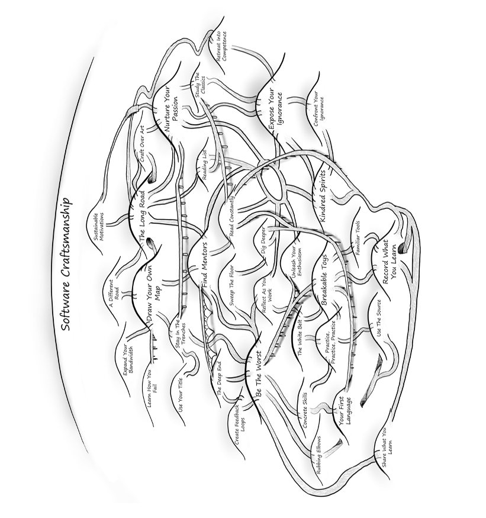

فصل یکم -- مقدمه (Introduction)
«شاگردی تأثیرگذار است، زیرا در انسان اشتیاقی مادامالعمر برای تسلط بر هنر میکارد.
این اشتیاق به یادگیری پیوسته، شاگرد را در مسیر تبدیلشدن به یک توسعهدهندهی بزرگ قرار میدهد.»
— پیت مکبریـن، Software Craftsmanship
این کتاب برای شاگردان نرمافزار نوشته شده است — برای کسانی که طعم برنامهنویسی را چشیدهاند و میخواهند آن را جدیتر دنبال کنند، اما به راهنمایی نیاز دارند.
فرقی ندارد که مدرک دانشگاهی از یک برنامهٔ معتبر علوم کامپیوتر داری یا کاملاً خودآموختهای؛
تو درک کردهای که توسعهدهندگان بزرگی در دنیا وجود دارند — و آرزو داری به سطح مهارت و درک آنها برسی.
این کتاب دقیقاً برای تو نوشته شده است؛ نه برای مدیرت، نه برای رهبر تیم، و نه برای استادت.
کتابهای زیادی برای آن افراد وجود دارد، اما این یکی برای آغازگران مسیر است.
در هنگام نگارش این اثر، نویسندگان بهشدت از اصول و ارزشهای مهارتورزی در نرمافزار (Software Craftsmanship) الهام گرفتهاند،
و حتی عنوان کتاب نیز بازتاب همین نگرش است.
مفهوم شاگردی از مدل صنفی قرون وسطی سرچشمه میگیرد،
جایی که گروههای کوچکی از استادکاران با هم کار میکردند
و شاگردان تازهکار در کنار کارگران ماهر و استادان، تجربه میآموختند.
یکی از اهداف ما این است که الهامبخش کسانی باشیم که عاشق خلق نرمافزارند
تا تمرکز خود را بر «هنر ساخت نرمافزار» حفظ کنند.
این مسیر از «Hello, world!» آغاز میشود،
اما متأسفانه برای بسیاری با ارتقا به مدیریت میانی پایان مییابد.
تعداد زیادی از افراد بااستعداد، بدون فکر، این ارتقا را میپذیرند
و چند سال بعد خود را در شغلی مییابند که از آن لذت نمیبرند و در آرزوی بازنشستگیاند.
اما برای کسانی که عاشق کدنویسی و یادگیریاند،
توسعهی نرمافزار حرفهای است که میتواند تمام عمر ادامه یابد —
و اگر درست طی شود، سفری بسیار لذتبخش خواهد بود.
پیش از آنکه این سفر را آغاز کنیم، ابتدا داستان دیو را میگوییم و سپس به برخی تعاریف کلیدی میپردازیم.
داستان او نشان میدهد که چگونه میتوان با ترکیب الگوهای شاگردی، نیروهایی نیرومند برای رشد شخصی ایجاد کرد.
تعاریف نیز مجموعهای از مفاهیم زیربنایی مهارتورزی در نرمافزار را روشن میسازد
و به پرسشهای رایج دربارهی این دیدگاه پاسخ میدهد.
داستان دیو (با چاشنی الگوهای شاگردی)
اولین زبان برنامهنویسی من Perl بود —
اما این پس از دو تلاش ناموفق برای یادگیری برنامهنویسی اتفاق افتاد.
در ۱۲ سالگی، پس از دیدن فیلم Tron و شیفتگی نسبت به ایدهی «دنیایی درون رایانه»،
سعی کردم با Apple IIe و یک دفترچهٔ راهنمای BASIC از اپل، خودم برنامهنویسی یاد بگیرم.
اما نتوانستم با آن کار خاصی انجام دهم.
وقتی دیدم تنها میتوانم بازیهای متنی ساده بسازم، ناامید شدم و کنار کشیدم.
در ۲۵ سالگی دوباره تلاش کردم — اینبار با Java،
کتاب For Dummies خریدم و گامبهگام تمرینهایش را انجام دادم،
اپلتهای ساده ساختم… ولی بازهم احساس کردم «دقیقاً همان Dummie» هستم.
همهچیز بیش از حد دشوار به نظر میرسید و من بار دیگر تسلیم شدم.
تا اینکه در ۲۶ سالگی، با پیدا کردن دو مربی واقعی، بالاخره موفق شدم.
این دو را در شرکت Edventions LLC در اسکوکی، ایالت ایلینوی پیدا کردم،
در اوج دوران داتکام.
«ایرو شاپیرو»، بنیانگذار شرکت، میدانست که میخواهم برنامهنویس شوم (او مرا بهعنوان ویراستار محتوای آنلاین استخدام کرده بود)
و از من خواست Perl یاد بگیرم.
او کتاب Programming Perl را روی میزم گذاشت و به من گفت یک «اسباببازی قابلشکستن (Breakable Toy)» بسازم تا از طریق آن یاد بگیرم.
چند روز بعد، تمام کتاب را — با وجود سنگینیاش برای یک تازهکار — مطالعه کردم
و سپس سراغ کتابی سادهتر از فهرست مطالعاتم رفتم.
مربی دومم، استیو بونِز، مدیر فنی Edventions بود؛
او گاهبهگاه کنارم مینشست و تکنیکهای اشکالزدایی قدرتمندی یادم میداد که هنوز هم به کار میبرم.
سختترین الگویی که در مسیر ساخت اولین نسخه از آن «اسباببازی» باید به کار میبردم،
الگوی Expose Your Ignorance (آشکار کردن نادانی خود) بود.
مجبور شدم غرورم را کنار بگذارم و از برنامهنویسان باتجربهی Perl و مدیران سیستم کمک بگیرم.
اما ارزشش را داشت — چون با چند نکتهی ساده دربارهی shebang و مجوزهای فایل در یونیکس،
توانستم پروژهام را تمام کنم و شاپیرو و بونِز را شگفتزده کنم.
دو سال بعد، تصمیم گرفتم از Perl فراتر بروم و مهارتهای جدیدی یاد بگیرم.
با Extreme Programming (XP) و Agile Development آشنا شدم که آن زمان بسیار داغ بودند.
در کنفرانس XP/Agile Universe شرکت کردم و در چند روز،
سیلی از دانش تازه بر من جاری شد.
با شنیدن سخنرانیهای افرادی مانند ران جفریز، مارتین فاولر، باب مارتین، الیستر کاکبرن و کنت بک،
احساس کردم وارد دنیای جدیدی شدهام —
و رسماً تبدیل به یک «Extreme Programmer Wannabe» شدم.
وقتی فهمیدم جاشوا کریِوسکی روی کتاب Refactoring to Patterns کار میکند،
با دوستی همفکر شروع به مطالعهٔ آن کردیم.
اما خیلی زود فهمیدیم از خودمان جلو زدهایم —
چون من هنوز نمیدانستم «Refactoring» یا «Pattern» دقیقاً یعنی چه!
بنابراین به دنبال منابع پایهایتر رفتم و به کتابهای Object-Oriented Software Construction و A Pattern Language رسیدم.
البته یادداشت کردم که بعداً به Refactoring to Patterns بازگردم و آن را کامل بخوانم.
در سال ۲۰۰۲ شروع به یادگیری Ruby کردم، اما در کار روزمره استفادهای از آن پیدا نکردم
تا اینکه در ۲۰۰۵ Ruby on Rails معرفی شد و همهچیز تغییر کرد.
در همان سال دوباره Ruby را از سر گرفتم و سعی کردم هر روز با آن کار کنم.
در حال ساخت یک «Breakable Toy» با آن بودم،
اما ذهنم هنوز مثل یک برنامهنویس Perl کار میکرد.
برای هر برنامهنویسی، وسوسهی تکیه بر عادتها و اصطلاحات زبان اولش هنگام یادگیری زبان جدید وجود دارد.
اما Ruby که به ظرافت و سادگی مشهور است،
در دستان من زشت و دستوپاگیر شده بود — پس فهمیدم دارم اشتباه میکنم.
تصمیم گرفتم کمربند سفید ببندم:
تسلط بر Perl را کنار گذاشتم، به مستندات Ruby پناه بردم، و از صفر یاد گرفتم.
بهزودی پاسخ سؤالاتم را پیدا کردم و توانستم کد پیچیدهام را با استفاده از یک متد استاندارد (String#scan برای آنهایی که کنجکاوند!) بازنویسی کنم.
برای اینکه این آموختهها در ذهنم بماند،
الگوی Expose Your Ignorance را دوباره به کار بستم —
و تمام یادداشتها و اشتباهاتم را در وبسایتم منتشر کردم تا همه ببینند.*
مهارتورزی در نرمافزار چیست؟
(What Is Software Craftsmanship?)
تعریفهای لغتنامهای برای واژههایی چون craft، craftsmanship، apprentice، journeyman و master، برای هدف این کتاب ناکافیاند.
این تعاریف معمولاً دایرهای و مبهماند:
مثلاً craft را با «مهارتی که craftsman دارد» تعریف میکنند،
و craftsman را «کسی که craftsmanship دارد»،
و craftsmanship را «کیفیتی که صنعتگران را در سنت کارگاهیشان به هم پیوند میدهد».
نه به تاریخ نظامهای صنفی در کشورهای مختلف تکیه دارند و نه مرز مشخصی میان صنایع دستی و سایر هنرها میگذارند.
در نتیجه، هیچچیز را کنار نمیگذارند و همهچیز را شامل میشوند — و این برای ما کافی نیست.
در گوگل، بیش از ۶۱٬۸۰۰ نتیجه برای عبارت "software craftsmanship" وجود دارد،
اما تنها شمار اندکی از آنها تعریفی مفید برای کسی که به دنبال مسیر حرفهای خود است، ارائه میکنند.
بسیاری از این مقالات، توسط برنامهنویسان دلسوزی نوشته شدهاند
که دریافتهاند در این مفهوم چیزی ارزشمند پنهان است،
اما نتوانستهاند آن را بهدرستی استخراج و توضیح دهند.
کتاب Software Craftsmanship از Pete McBreen تلاشی است برای تدوین یک بیانیهٔ تازه در توسعهٔ نرمافزار —
رویکردی برای کسانی که نمیپذیرند نرمافزار الزاماً شاخهای از مهندسی یا علم باشد.
اما حتی این اثر الهامبخش نیز کامل نیست.
او میان مهارتورزی نرمافزار امروزی و مهارتورزیِ آرمانیِ مورد نظر خود تفاوتی قائل نمیشود،
و همچنین مرز کافی میان دیدگاهش و مدلهای صنفی قرون وسطایی که بر اساس ساختارهای بسته و محرمانه اداره میشدند، نمیگذارد.
اشتباه او این است که مهارتورزی نرمافزار را در تضاد با مهندسی نرمافزار تعریف میکند
و از خواننده میخواهد میان آن دو یکی را انتخاب کند.
اما ما باور داریم که میتوان مدل «مهارتورزی» را بهشکل مثبت و همافزا تعریف کرد،
بدون آنکه کسانی را که در تلاش برای ایجاد انضباط مهندسی در نرمافزارند، طرد کنیم.
ریشهٔ تاریخی مدل ما
مدلی که از آن الهام گرفتهایم، در اروپای قرون وسطی —
تا پیش از انقلاب صنعتی — رایج بود.
در آن دوران، اصناف (Guilds) بر استادان نظارت داشتند
و استادان بر شاگردان و کارگران خود.
استادان مالک کارگاه بودند و اختیار مطلق داشتند.
در مرتبهٔ پایینتر، دستیاران (Journeymen) قرار داشتند —
صنعتگرانی که هنوز «شاهکار نهایی» خود (chef d’œuvre élève) را خلق نکرده بودند،
کاری که باید مهارتشان را به حدّ استادی میرساند.
دستیاران معمولاً سیّار بودند و تنها راه انتقال فناوریها و تکنیکهای جدید از شهری به شهر دیگر محسوب میشدند.
آنها علاوهبر یادگیری، بر کار روزمرهٔ شاگردان نیز نظارت داشتند.
شاگردان (Apprentices) سالها برای یک استاد کار میکردند
تا با اثبات مهارت و ارزشهای حرفهای، به مقام دستیار برسند.
کسی که در ساختار صنف جایی نداشت، حتی حق نداشت قانوناً حرفهاش را انجام دهد.
البته چنین نظامی امروز غیرعملی — و در بسیاری از کشورها حتی غیرقانونی — است.
هدف ما تکرار اشتباهات آن دوران نیست؛
بلکه میخواهیم از آن الگو الهام بگیریم تا کارگاه مدرن نرمافزار بسازیم —
جایی که در آن آزادی رشد، یادگیری، و بهبود وجود دارد، نه فقط تقلید از گذشته.
دستیاران (Journeymen) معمولاً سیّار بودند و از شهری به شهر دیگر سفر میکردند.
آنها تنها کانال انتقال دانش و تکنیکهای جدید میان شهرها بودند.
علاوهبر آوردن مهارتهای تازه، مسئولیت داشتند بر کار روزمرهٔ شاگردان نیز نظارت کنند.
شاگردان معمولاً چند سال برای یک استاد کار میکردند تا سرانجام،
با اثبات اینکه مهارتها و ارزشهای اصلی حرفه را درونی کردهاند، به جایگاه دستیاران ارتقا یابند.
در آن دوران، هرکس که خارج از سلسلهمراتب صنف بود، قانوناً اجازهٔ فعالیت حرفهای نداشت.
همانطور که میتوان حدس زد، این سیستم بهراحتی میتوانست مورد سوءاستفاده قرار گیرد
و در دنیای امروز نه عملی است و نه اخلاقی (و حتی در بسیاری کشورها غیرقانونی).
ما قصد نداریم اشتباهات گذشته را تکرار کنیم —
بلکه میخواهیم بهجای بازسازی رمانتیکِ کارگاههای سنتی،
مدلی مدرن از «استودیوی مهارتورزی» بسازیم؛
جایی که بتوانیم گذشته را بهبود دهیم، نه اینکه صرفاً تقلیدش کنیم.
یکی از درسهایی که از جنبش Agile گرفتهایم، همین است:
اینکه صرفاً گفتنِ «چهکار باید کرد»، تغییر پایدار ایجاد نمیکند.
وقتی افراد با موقعیتی روبهرو میشوند که قوانین موجود پاسخی برایش ندارند، سردرگم میشوند.
اما اگر همان افراد ارزشهای زیرساختیِ قوانین را درونی کرده باشند،
میتوانند قواعد تازهای برای موقعیتهای تازه بسازند.
هدف ما در این کتاب، صرفاً دادن «دفترچهٔ قوانین» نیست؛
بلکه میخواهیم به تو توانایی بدهیم که در هر موقعیت جدید،
خودت روشها و رویههای تازه خلق کنی —
و با این کار، رشتهٔ توسعهٔ نرمافزار را رو به جلو حرکت دهی.
دیدگاه ما از مهارتورزی در نرمافزار
(Our Vision of Software Craftsmanship)
دیدگاه ما از مهارتورزی نرمافزار ترکیبی است از دو چیز:
بخشی برگرفته از ارزشها و بینشهای افرادی با مهارتهای بالا که برای این کتاب با آنها گفتوگو کردهایم،
و بخشی دیگر، بازتابِ تصویری از جامعهای که آرزو داریم پدید آید.
ایدههای این کتاب، نقطهٔ آغاز برای رسیدن به آن چشمانداز است.
وقتی از واژهٔ Software Craftsmanship استفاده میکنیم، منظور ما یک جامعهٔ عملمحور (Community of Practice) است
که اعضایش با مجموعهای از ارزشهای مشترک و همپوشان به هم پیوند خوردهاند، از جمله:
۱. ذهنیت رشد (Growth Mindset)
با الهام از پژوهشهای کارول دوِک (Carol Dweck)، باور داریم
که انسان میتواند بهتر شود و هرچیزی قابل بهبود است اگر برایش تلاش کند.
بهقول او:
«تلاش است که تو را باهوش یا بااستعداد میکند.»
شکست نیز فقط انگیزهای برای امتحان روش تازهای در دفعات بعد است،
نه نشانهای از ناتوانی.
این دیدگاه در تضاد با باور ایستا است که میگوید استعداد، ذاتی و محدود است.
۲. سازگاری و تغییر مداوم
باید همواره براساس بازخوردی که از جهان پیرامون میگیریم، خود را اصلاح کنیم.
آتول گاوانده (Atul Gawande) از آن با تعبیر
«شناخت نارساییهای کار خود و جستوجوی راهحل»
یاد میکند.
پذیرش خطا، شرط تکامل است.
۳. عملگرایی در برابر تعصب
ما عملگرا (Pragmatic) هستیم، نه متعصب (Dogmatic).
یعنی در صورت لزوم، از کمال نظری یا «بهترین راه» صرفنظر میکنیم
تا بتوانیم کار را همین امروز پیش ببریم.
۴. اشتراک دانش بهجای احتکار آن
باور داریم دانستن، زمانی ارزشمند است که به اشتراک گذاشته شود.
دانش، وقتی انحصاری بماند، کمیاب و بیثمر میشود.
این ارزش، با روحیهٔ نرمافزار آزاد و متنباز پیوندی عمیق دارد.
۵. روحیهٔ تجربه و شکست
آزمایش میکنیم. شکست میخوریم. یاد میگیریم. دوباره تلاش میکنیم.
همانگونه که ویرجینیا پاسترل (Virginia Postrel) میگوید:
«هر ایدهای خوب نیست، اما فقط با آزمودن ایدههای تازه است
که پیشرفت واقعی حاصل میشود. و هیچگاه نقطهٔ پایان وجود ندارد —
هر بهبودی میتواند باز هم بهبود یابد.»
۶. کنترل درونی (Internal Locus of Control)
بهجای انتظار برای دستور از بیرون،
مسئول مسیر و سرنوشت خودمان هستیم.
یادگیری و پیشرفت، بر عهدهٔ خود ماست، نه دیگران.
۷. تمرکز بر فرد، نه گروه
ما جنبشی با رهبر و پیرو نیستیم.
گروهی هستیم از افراد مستقل که میخواهند مهارتهای خود را ارتقا دهند
و میدانند بحث، مخالفت و نقد سازنده
بهتر از پیروی کورکورانه از «چهرههای مشهور» است.
تغییر واقعی از درون خود ما آغاز میشود، نه از اصلاح جهان بیرون.
به همین دلیل، این کتاب بر «بهبود خودت» تمرکز دارد، نه بر «اصلاح تیمت».
۸. جامعیت و همپذیری (Inclusiveness)
ما شاخههای دیگر را طرد نمیکنیم:
نه توسعهٔ سازمانی (Enterprise Software)،
نه علوم کامپیوتر،
و نه مهندسی نرمافزار —
(در واقع، یکی از نویسندگان این کتاب، «Ade»، در عنوان شغلی خود واژهٔ Engineer دارد).
ما باور داریم که نظام سالم باید بتواند بهترین ایدهها را از همهجا جذب کند.
۹. مهارتمحوری در برابر فرایندمحوری
برای ما، مهارت بالا مهمتر از استفاده از «فرایند درست» است.
هیچ ابزار یا متدی همه را بهیکاندازه موفق نمیکند.
همه میتوانند پیشرفت کنند، اما همیشه تفاوت در مهارت باقی خواهد ماند.
همانطور که گاوانده پرسید:
«آیا پزشکی یک صنعت است یا یک هنرِ دستی (Craft)؟
اگر پزشکی یک هنر است، باید بر آموزش مهارت تمرکز کرد،
نه صرفاً بر فرایندها یا ابزارها.»
۱۰. یادگیری در موقعیت واقعی (Situated Learning)
بر اساس نظریهٔ اتین ونگر (Etienne Wenger)،
بهترین یادگیری زمانی رخ میدهد که در کنار کسانی باشی
که در حال استفاده از همان مهارتهایی هستند که میخواهی بیاموزی.
این ایده در دنیای نرمافزار با الگوهایی چون
Expert in Earshot شناخته میشود —
یعنی «بودن در مجاورت استاد»، نه صرفاً «مطالعه از راه دور».
این مجموعهٔ ارزشها، زیربنای نقشها و مسئولیتهای متفاوت در جامعهٔ مهارتورزان است —
نقشهایی که در بخشهای بعدی کتاب با جزئیات شرح داده خواهند شد.
معنای «شاگرد بودن» چیست؟
(What Does It Mean to Be an Apprentice?)
وقتی از «شاگرد بودن» صحبت میکنیم، بهترین تعریف را مارتن گوستافسون (Marten Gustafson) ـ یکی از افرادی که با او مصاحبه کردیم ـ ارائه داد:
«فکر میکنم شاگرد بودن یعنی این نگرش که همیشه راهی بهتر، هوشمندانهتر و سریعتر برای انجام کاری که کردی یا داری انجام میدهی وجود دارد.
شاگردی یعنی در فرآیند تکامل بودن و جستوجوی راههای بهتر و یافتن آدمها، شرکتها و موقعیتهایی که تو را مجبور میکنند آن روشهای بهتر و هوشمندانهتر را یاد بگیری.»
این جمله دقیقاً جوهرهٔ ذهنیت شاگردی را توصیف میکند:
میل درونی به رشد که وابسته به هیچکس نیست و تو را وادار میکند راهی سازنده برای حل مسائل بیابی.
به قول کارول دوِک (Carol Dweck):
«این میل به رشد، کمیتی درونی نیست که با موفقیتهای آسان تقویت شود و با شکستها تحلیل برود.
چیزی نیست که بتوان آن را با گفتنِ “تو باهوشی” در کسی دمید.
بلکه قابلیتی است که باید با آموزشِ ارزشگذاری بر یادگیری ـ نه بر ظاهرِ باهوش بودن ـ در افراد ایجاد شود؛
با لذت بردن از چالش و استفاده از خطاها بهعنوان مسیرهایی به سوی مهارت.»
در وضعیت ایدئال، تو در تیمی کوچک از شاگردان (Apprentices)، دستیاران (Journeymen) و استادان (Masters) کار میکنی.
اما دیدگاه ما به شاگردی، وابسته به چنین ساختاری نیست.
شاگردیِ تو زیر کنترل خودت است و نتیجهٔ آن کاملاً بر عهدهٔ خودت.
هرچند مسیر و سرعت پیشرفتت را خود تعیین میکنی،
اما کیفیت و در دسترس بودن مربیان و استادان تأثیری عمیق و ماندگار بر مهارتورزی تو خواهند داشت.
آغاز مسیر مهارتورزی
دورهٔ شاگردی، آغازِ سفر تو بهسوی «مهارتورز نرمافزار» است.
در این مرحله تمرکز اصلیات درونی است —
یعنی رشد دادن خودت، یادگیری شیوهٔ یادگیری، و شناخت نقاط قوت و ضعف خویش.
باید یاد بگیری چطور خودت را رشد دهی،
چطور یاد بگیری که چگونه یاد بگیری.
همین تمرکز بر رشد درونی، جوهرهٔ شاگرد بودن است.
در نهایت، شاگرد از مرحلهای که تنها مسئولیتش «یادگیری مداوم» است،
به مرحلهای میرسد که مسئولیتهای گستردهتر و بیرونیتر دارد.
اما این تغییر معمولاً فقط در بازنگری گذشته قابل تشخیص است.
در یک لحظهٔ مشخص، ممکن است استاد یا دستیار ارشد نزد او بیاید و بگوید:
«اکنون کارت و نقشت در جامعه، در سطح یک دستیار (Journeyman) است.»
اما در واقع، این گذار از مدتها قبل آغاز شده —
تغییری تدریجی و نامحسوس، نه ناگهانی.
مثل قورباغهای که در آب گرم بهآرامی جوشانده میشود،
شاگرد گامبهگام رشد میکند تا خودش نفهمد کی به سطحی تازه رسیده است.
برای بعضیها این انتقال سریع رخ میدهد،
برای برخی دیگر ممکن است سالها یا حتی کل دوران حرفهایشان طول بکشد.
معنای «دستیار بودن» چیست؟
(What Does It Mean to Be a Journeyman?)
در مسیر پیشرفت مهارتورزی، هر مرحله ویژگیهای مراحل پیشین را در خود حفظ میکند.
بنابراین، همانطور که شاگرد بر رشد درونی و یادگیری تمرکز دارد،
دستیار (Journeyman) و حتی استاد (Master) نیز باید همچنان نگاه درونی خود را حفظ کنند —
اما در این مرحله، تمرکز تازهای افزوده میشود:
تمرکز بر روابط میان افراد حرفهای و کانالهای ارتباطی درون و بیرون تیم.
در گذشته، دستیار از یک استاد به استاد دیگر سفر میکرد
و در این میان، ایدهها و روشهای نو را میان کارگاهها پخش میکرد.
اما در دنیای امروز که ممکن است سالها در یک تیم بمانی،
نقش تو ایجاد و بهبود ارتباطات در همان تیم است —
و در ادامه، این تمرکز به مسئولیتی گستردهتر تبدیل میشود:
آموزش و راهنمایی اطرافیان و برقراری ارتباط مؤثر با جامعهٔ حرفهای نرمافزار.
دستیار تمرکزش بر ساخت پورتفولیویی از پروژههاست که رشد مهارتیاش را نشان میدهد.
او بین پروژهها و تیمهای مختلف جابهجا میشود تا تجربهاش را متنوع و عمیقتر کند،
جایگاهش را در جامعه بالا ببرد و برای رسیدن به مرحلهٔ استادی آماده شود.
اما با گسترش این نقش، دامنهٔ مسئولیتهایش نیز بیشتر میشود.
شکست یک شاگرد فقط برای خودش زیان دارد،
اما شکست یک دستیار میتواند به اطرافیان و شاگردانی که از او الگو میگیرند نیز آسیب برساند.
به همین دلیل، برخی از الگوهایی که برای شاگردان مفیدند،
برای دستیاران دیگر مناسب نیستند، چون آنان باید مسئولانهتر رفتار کنند.
معنای «استاد بودن» چیست؟
(What Does It Mean to Be a Master?)
استادی یعنی ایفای تمام نقشهای یک شاگرد و یک دستیار،
اما با تمرکزی تازه: پیشبردن کل صنعت.
به قول The Creative Habit، «کسب مهارت و تکنیک بینقص، فقط نقطهٔ آغاز است.»
استادی یعنی این مهارت را به ابزاری تبدیل کنی که
توان دیگران را چند برابر کند.
شکل این کار میتواند متفاوت باشد:
- طراحی ابزارهایی که به ذات توسعهٔ نرمافزار نزدیکترند،
- تربیت نسل تازهای از دستیاران که حتی از خودت فراتر روند،
- یا خلق چیزی کاملاً نو که هنوز نمیتوان تصورش کرد.
بهطور خلاصه، استاد کسی است که کسب، بهکارگیری، و انتقال مهارت برتر
را مهمترین وظیفهٔ خود میداند — نه مقام، نه عنوان، بلکه اثرگذاری واقعی.
تعاریفی که اینجا از شاگرد، دستیار و استاد ارائه شد،
با آنچه در فرهنگنامهها میبینی متفاوت است؛
مدل تازهای است که از دل دنیای نرمافزار بیرون آمده.
اما باور ما این است که ارزشهای بنیادینی که در این چشمانداز از مهارتورزی نهفتهاند،
میتوانند تو را به هر اندازه که بخواهی موفق کنند —
چه آنها را بپذیری، چه گسترش دهی، چه رد کنی یا حتی مسیر دیگری در پیش بگیری.
شاگردی چیست؟
(What Is Apprenticeship?)
«وضعیت بنیادی یادگیری، موقعیتی است که در آن فرد با کمککردن به کسی که واقعاً میداند چه میکند، یاد میگیرد.»
— کریستوفر الکساندر و همکاران، A Pattern Language، ص. ۴۱۳
در ذهن بسیاری، تصویر کلیشهای از «شاگردی» همان است که کتابهایی چون Fifteen Craftsmen On Their Crafts (1945) ارائه دادهاند:
پسر نوجوانی با صورت سیاه از دوده، در کارگاه آهنگری مشغول به کار است؛
در حالی که آهنگر پیر و خشن، پروژههایش را با تجربه و مهارت انجام میدهد و شاگردش در کنار او کمک میکند —
گاه با چکش در فرایند ساخت مشارکت دارد، گاه فقط کارگاه را تمیز میکند ولی چشم از دستان استاد برنمیدارد.
چنین شاگردی معمولاً چند سال طول میکشد و پاداش او تنها دانش، تجربه، غذا و سرپناه است، نه پول.
در پایان این دوره، شاگرد چنان مهارتی مییابد که میتواند پروژههای خود را انجام دهد،
شاید حتی استاد خود را ترک کند تا در کارگاهی دیگر با مسئولیتهای بیشتر مشغول شود.
از آن پس، با تکیه بر مهارتهایش میتواند مستقل زندگی کند و ابزار و معاش خود را فراهم آورد.
اما در دنیای امروز، رابطهٔ میان یک توسعهدهندهٔ باتجربه و یک برنامهنویس تازهکار
شباهت چندانی به این الگوی سنتی ندارد.
پس پرسش این است:
درک امروزی ما از شاگردی چیست و چگونه از این تصویر کلیشهای فراتر میرود؟
شاگردی در دنیای مدرن
در این کتاب، ما در پی تعریف «الگوی آرمانی شاگردی» نیستیم.
اگر مخاطب ما مدیران تیم یا رهبران پروژه بودند،
شاید لازم بود دستورالعملی برای ساخت آن شرایط ایدئال بنویسیم —
اما این کتاب برای تازهکارانِ دنیای نرمافزار نوشته شده؛
برای کسانی که در میدان عملاند و میخواهند یاد بگیرند چگونه رشد کنند،
شغل بهتری پیدا کنند، پروژهشان را کامل کنند یا توسعهدهندهای بزرگ شوند.
واقعیت این است که بیشتر افراد هرگز در شاگردی رسمی زیر نظر استادان واقعی نرمافزار قرار نمیگیرند.
در عوض، بیشترشان باید شاگردی خود را از دل شرایط دشوار و ناکامل بسازند —
شرایطی مثل:
- مدیران ناآگاه یا سختگیر،
- همکاران بیانگیزه،
- ضربالاجلهای غیرممکن،
- و محیطهای کاری که تازهکارها را مثل «اسب بارکش» در اتاقکهای تنگ با رایانهای کند و اینترنت محدود حبس میکنند.
بیشتر درسهای این کتاب از تجربهٔ افرادی (از جمله خود نویسندگان) گرفته شده
که در چنین محیطهایی دوام آوردند و راه رشد خود را با تلاش فردی و ذهنیت شاگردی پیدا کردند.
تا زمانی که صنعت نرمافزار توصیهٔ پیت مکبِرین (Pete McBreen) را جدی نگیرد،
تازهکارها به کتابهایی مانند این نیاز خواهند داشت تا خودشان فرصت یادگیری را بسازند:
«ما میتوانیم زمان لازم را برای پرورش شاگردان صرف کنیم، چون با مشکلِ فراوانی روبهروایم، نه کمبود.
امروز توسعهدهندگان زیادی داریم، اما تعداد توسعهدهندگان خوب بسیار اندک است.»
— Software Craftsmanship، ص. ۹۳
جوهرهٔ شاگردی
شاگردی راهی برای آموختن حرفهایبودن در توسعهٔ نرمافزار است —
نه صرفاً یادگیری نحو (syntax) و ابزارها،
بلکه یاد گرفتن چگونه شبیه بهترین توسعهدهندگان شویم.
شاگردی یعنی جستوجوی معلمان شایسته،
یعنی یادگیری از طریق همکاری واقعی،
یعنی قرار گرفتن کنار کسانی که در مسیر رشد از تو جلوترند.
بهعبارتی، شاگردی نخستین گام در مسیر تبدیل شدن به نوعی دیگر از برنامهنویس است —
برنامهنویسی که به کمتر از «مهارت و درک عمیق» قانع نیست.
الگوی شاگردی چیست؟
(What Is an Apprenticeship Pattern?)
الگوی شاگردی (Apprenticeship Pattern) تلاشی است برای ارائهٔ راهنمایی عملی به کسی که در چارچوب مدل مهارتورزی (Craft Model) کار میکند تا مسیر پیشرفت شغلیاش را هوشمندانهتر طی کند.
تمام الگوهای این کتاب از دل تجربههای واقعی نویسندگان و افرادی که با آنها مصاحبه کردهایم استخراج شدهاند.
اگر هنگام خواندنشان احساس کردی «چیز جدیدی» نمیخوانی، این نشانهٔ خوبی است —
چون بهاحتمال زیاد همین الگوها را در رفتار اطرافیانت هم میبینی.
ویژگیهای کلیدی الگوهای شاگردی
دو ویژگی مشترک میان تمام این الگوها وجود دارد:
۱. آشنایی و بداهت (Familiarity)
الگوها قرار نیست عجیب یا شگفتانگیز باشند؛
بلکه دقیقاً به همین دلیل ارزشمندند که در واقعیت کار میکنند
و در زندگی حرفهای توسعهدهندگان بسیاری، بیآنکه نامی داشته باشند، در جریاناند.
۲. زایندگی (Generativity)
هر بار که یک الگو را بهکار میبری، نتیجهای تازه میگیری.
اینها دستورالعملهای ثابت نیستند که هر بار خروجی یکسان بدهند،
بلکه ابزارهاییاند که یک مجموعه از مسائل را حل میکنند و در عوض، مجموعهٔ تازهای از مسائل میسازند.
هنر تو در این است که با قضاوت درست، انتخاب کنی کدام مسائل را ترجیح میدهی.
زبان الگوها
این کتاب بر اساس ساختاری به نام زبان الگو (Pattern Language) نوشته شده است.
زبان الگو مجموعهای از راهحلهای مرتبط است که برای مسائل تکرارشونده در یک حوزهٔ خاص ارائه میشود.
نخستین بار کریستوفر الکساندر (Christopher Alexander) این مفهوم را در کتاب A Pattern Language معرفی کرد،
که شامل بیش از ۲۵۰ الگو برای طراحی همهچیز از آشپزخانه و خانه گرفته تا شهر و حتی جامعه بود.
در دههٔ ۱۹۹۰، وارد کانینگهام (Ward Cunningham) و کنت بک (Kent Beck) این ایده را به دنیای نرمافزار آوردند،
که در نهایت منجر به صدها مقاله، کتاب و کنفرانس در زمینهٔ Design Patterns شد.
معروفترین نمونهٔ این حوزه کتاب Design Patterns از گروه معروف به Gang of Four است،
هرچند از دید نویسندگان، کتاب Refactoring اثر مارتین فاولر نمونهٔ بهتری از «زبان الگو» بهمعناى واقعی است.
اما روشن کنیم:
کتابی که اکنون در دست داری، کتاب طراحی نرمافزار نیست،
بلکه کتاب طراحی مسیر آغازینِ حرفهٔ تو در توسعهٔ نرمافزار است —
کتابی برای اینکه خودت را طوری بسازی که در کاری که میکنی واقعاً عالی شوی.
الگوها از کجا آمدهاند؟
در طراحی نرمافزار، یکی از اصول مهم این است که چارچوب (Framework) از دل سیستمهای واقعی و در حال کار استخراج شود.
بههمین ترتیب، الگوهای طراحی نرمافزار نیز از تجربهٔ چندین پروژهٔ موفق بیرون کشیده میشوند
که در آنها راهحل مشابهی برای حل مسئلهای مشابه استفاده شده است.
این کتاب هم دقیقاً چنین مسیری را طی کرده است:
- ابتدا از تجربیات شاگردی «دیو» (Dave) استخراج شد.
- سپس با تجربیات «ادِ» (Ade) تکمیل و آزمایش گردید.
- در نهایت، با گفتوگو و مصاحبه با حدود ۳۰ متخصص نرمافزار (از چند سال سابقه تا چند دهه تجربه) مورد ارزیابی قرار گرفت.
هدف از این مصاحبهها دو چیز بود:
- بررسی اینکه آیا این الگوها واقعاً «راهحلهای مشترک برای مسائل مشترک» هستند یا نه؛
- یافتن الگوهای جدیدی که هنوز شناسایی نشده بودند.
نویسندگان همچنین در چند رویداد حرفهای مانند PLoP 2005، نشست Agile Atlanta و جلسات داخلی ThoughtWorks شرکت کردند
تا ساختار و دقت این الگوها را بهبود دهند.
در پایان، بخش بزرگی از محتوای کتاب بهصورت رایگان در وب منتشر شد
تا جامعهٔ نرمافزار بازخورد دهد و در شکلگیری نهایی آن مشارکت کند.
خلاصهٔ نگاه نویسندگان:
الگوهای شاگردی ابزارهایی زنده و پویا هستند،
نه دستورالعملهای خشک و تکراری.
هرچه بیشتر از آنها استفاده کنی،
جهت یادگیری و مسیر حرفهایات روشنتر و عمیقتر خواهد شد.
از اینجا به کجا میرویم؟
(Where Do We Go from Here?)
وقتی مطالعهٔ الگوهای شاگردی را آغاز میکنی، به یاد داشته باش:
قدرت انتخاب با توست.
تو میتوانی این الگوها را به هر شکلی که بخواهی ترکیب، تغییر و با شرایط خاص خودت سازگار کنی.
هیچ نسخهٔ واحدی وجود ندارد.
این الگوها برای گروهی مشخص از افراد در یک بستر خاص نوشته شدهاند.
در طول مسیر حرفهایات، بعضی از آنها ناگهان برایت کاملاً معنادار و کاربردی میشوند،
و مدتی بعد شاید دیگر بیربط یا ناکافی به نظر برسند — و این طبیعی است.
دوران شاگردی، فصلی از زندگی حرفهای توست که تمرکز اصلیات باید بر رشد شخصی باشد،
نه بر درآمد یا جایگاه.
این دوره زمانی است برای بهتعویق انداختن جاهطلبی مالی
تا در عوض، فرصت یادگیری حداکثری برای خودت فراهم کنی.
چنین دورهای به تو اجازه میدهد اندکی خودخواه باشی —
نه از سر خودبینی، بلکه از سر تمرکز بر رشد درونی.
اما این فصل همیشگی نیست.
وقتی این فصل به پایان برسد،
هرچند هنوز چیزهای زیادی برای آموختن خواهی داشت،
اما دیگر یک شاگرد نیستی.
اکنون باید اولویتهایت را تغییر دهی:
از رشد شخصی به سمت دیگران —
به سوی مشتریانت، همکارانت و جامعهات.
این همان نقطهای است که مسیر شاگردی به مسیر تعهد و خدمت حرفهای تبدیل میشود؛
جایی که دانشت دیگر فقط برای خودت نیست،
بلکه ابزاری است برای رشد کسانی که در کنار تو هستند.